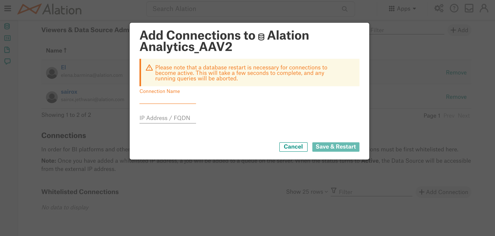

Connect Third-Party BI Tools to Alation Analytics V2¶
Alation Cloud Service Applies to Alation Cloud Service instances of Alation
Customer Managed Applies to customer-managed instances of Alation
Alation Analytics V2 can be accessed from third-party BI tools, enabling you to build reports or visualizations of your Alation Analytics data. The method of connecting third-party BI tools to Alation Analytics depends on what type of Alation instance you’re using:
Note
If you are an Alation Cloud Service customer who’s not yet on the cloud native architecture, contact your account manager to discuss your options.
Third-Party BI Access on Cloud Native Architecture¶
Available from 2023.3
To connect third-party BI tools to Alation Cloud Service instances of Alation that are on the cloud native architecture, Alation will copy your Alation Analytics database to Snowflake. All Alation Analytics data will automatically sync to Snowflake, so your Snowflake database will always be up to date.
Alation users with access to Alation Analytics will automatically have read-only access to the Alation Analytics database in Snowflake.
You can then connect your BI tools to this Snowflake instance. Snowflake connects natively to many common BI tools.
The process is described in detail below:
Set Up Third-Party BI Access to Alation Analytics¶
To set up third-party BI tool access to Alation Analytics for Alation Cloud Service customers on the cloud native architecture:
Submit a ticket to Alation Support asking to have third-party BI access enabled via Snowflake replication.
Alation will replicate your Alation Analytics database in Snowflake and send you the following information:
The Snowflake server address
The Snowflake role associated with your Alation Analytics database
All existing Alation Analytics users will automatically be added as users of the Snowflake database. Their Snowflake username will be the same as their Alation Analytics username.
Existing Alation Analytics users must change their Alation Analytics password, which will then get synced with Snowflake. To do this:
Log into Alation.
Click the My Account icon in the top right corner, then click Account Settings.
Click the DB Connections tab.
Under the Alation Analytics Connection section, click Change Password on the right.
Enter the new password. The password must comply with the Snowflake password policy. It must be at least 8 characters long and include at least:
One number
One uppercase letter
One lowercase letter
You may reuse your old Alation Analytics password as long as it complies with the Snowflake password policy.
Click Update Password.
Once they’ve reset their password, it will be synced with their new Snowflake account, and they can begin using it to access Alation Analytics data in Snowflake.
Connect Third-Party BI Tools to Alation Analytics¶
Follow the instructions provided by your BI tool to connect to your Alation Analytics database in Snowflake. You will need the following information, which will be provided by Alation through the setup process above:
The Snowflake server address
The Snowflake role
Note
The Snowflake role provides read-only access to the Alation Analytics database in Snowflake.
You will also need your Snowflake credentials. For existing Alation Analytics users, your Snowflake user account is provisioned during the initial setup process above. Before using your Snowflake credentials the first time, you need to reset your Alation Analytics password as described under Set Up Third-Party BI Access to Alation Analytics above. Your Alation Analytics password is then synced to your Snowflake account.
Some BI tools may require additional information or steps to connect to Snowflake. For help connecting specific BI tools, see Snowflake’s Business Intelligence page.
Provision New Alation Analytics Users in Snowflake¶
When you add new users to Alation Analytics, they will automatically be added as Snowflake users as well. Their Snowflake credentials will be the same as their Alation Analytics credentials.
Third-Party BI Access on Customer-Managed (On-Premises) Instances¶
To connect third-party BI tools to customer-managed (on-premises) instances of Alation, the tools need to be added to Whitelisted Connections on the Alation Analytics V2 data source Settings page. This will allow the service at a specific IP address to access the Alation Analytics V2 database. Note that you will need to provide your Alation Analytics V2 database access credentials to connect.
Alation Analytics Information for External Access¶
To connect to Alation Analytics V2 from a third-party BI tool, use the following information:
Connection Information |
Value |
|---|---|
Database type |
PostgreSQL |
URL |
|
Database name |
|
TCP Port |
|
Access credentials |
Your database access account credentials for Alation Analytics V2 in Alation |
Note
If you are working with Tableau, whitelist both the Tableau server and the client IP address of the Tableau desktop machine you are using Tableau on.
To whitelist the third-party BI or querying tools:
Sign in to Alation and open the catalog page of the Alation Analytics V2 Data Source.
In the upper-right corner, click More and then click Settings. The Data Source settings page will open.
On the Access tab, in the Connections section, click Add Connection on top right of the Whitelisted Connections table:
{kind=link}
In the Add Connections dialog that opens, provide the Connection Name and IP address/FQDN in CIDR format (
127.0.0.1/32), then click Save and Restart. Whitelisting of a connection restarts the database.
{kind=link}
After the new connection is saved, its status in Alation may be PENDING. When the status changes to ACTIVE, you can connect to Alation Analytics V2 from an external tool.
{kind=link}